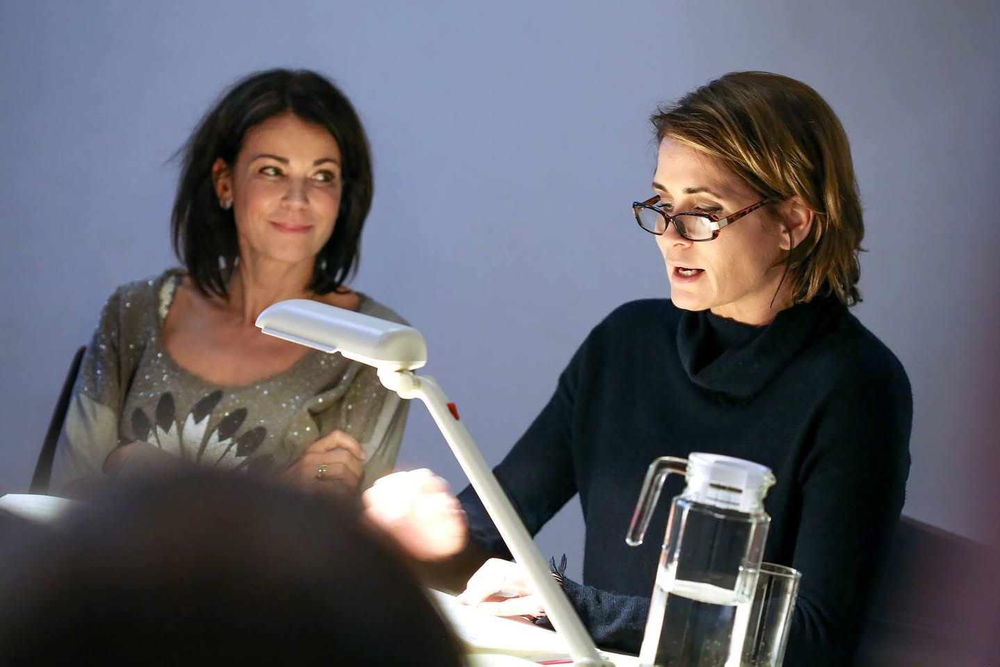

Zum ersten Mal begegnete ich Gerit Kling in unserer alten Kinderklinik. Gemeinsam mit mehreren Schauspielkollegen, darunter Christian Berkel, besuchte sie die Kinderkrebsstation. Die Gruppe blieb fast einen halben Tag bei unseren Kindern, spielte mit ihnen, erzählte Geschichten und sorgte dafür, dass für einige Stunden nicht Krankheit und Chemotherapie im Mittelpunkt standen. Die Kinder hatten sichtlich Freude daran.
Einige Zeit später traf ich Gerit bei einer Aftershow-Party nach der Gala von Ein Herz für Kinder wieder. Wir setzten uns etwas abseits zusammen und unterhielten uns über unsere Kinder und über die Arbeit in unserer Klinik. Bevor wir auseinander gingen, verabredeten wir, uns irgendwann wiederzusehen und gemeinsam etwas für unsere kleinen Patienten auf die Beine zu stellen.
Die Gelegenheit ergab sich wenig später bei der Sommerveranstaltung der Stiftung Ein Herz für Kinder auf den Wannseeterrassen. Dort traf ich Gerit erneut. Diesmal war sie mit ihrer Mutter und ihrer Schwester Anja gekommen. Wir saßen zusammen und ich erzählte von unserer neuen Kinderklinik, insbesondere von unserem Theater, das sich im Zentrum der Kinderklinik befand. Dort hielten wir seit einiger Zeit Aufführungen, Lesungen und andere kulturelle Angebote für die Kinder ab, um sie von ihrer Krankheit abzulenken.
Damals arbeitete ich gerade mit der Kinderbuchillustratorin Melanie Garanin zusammen. Mir kam die Idee, dass sie während einer Lesung live Figuren zeichnen könnte, während Gerit und Anja den Kindern vorlasen. Die Vorstellung gefiel allen sofort. Besonders begeistert war Margarita, die Mutter der beiden Schauspielerinnen. Sie war gleichzeitig ihre Managerin und sagte ohne langes Zögern:
„Das machen wir. Wir finden einen Termin."

Es blieb nicht bei einem freundlichen Versprechen. Einige Wochen später kamen Melanie Garanin, Gerit Kling und Anja Kling tatsächlich in unsere Kinderklinik. Die Kinder hörten gespannt zu, beobachteten, wie unter den Händen von Melanie Garanin neue Figuren entstanden, stellten Fragen und sammelten anschließend Autogramme. Für viele von ihnen war es ein Nachmittag, an dem die Krankheit für einige Stunden in den Hintergrund rückte.

Mich beeindruckte vor allem, wie selbstverständlich alle Beteiligten mitmachten. Niemand schaute auf die Uhr, niemand hatte es eilig. Es ging nicht um Fotos für die Presse oder darum, irgendwo aufzutreten. Es ging darum, kranken Kindern eine Freude zu machen. Wenn ich heute an diesen Nachmittag zurückdenke, denke ich deshalb nicht zuerst an bekannte Schauspielerinnen.
Ich denke an vier Frauen, die ihr Wort gehalten haben und unseren Kindern einen unvergesslichen Nachmittag schenkten.